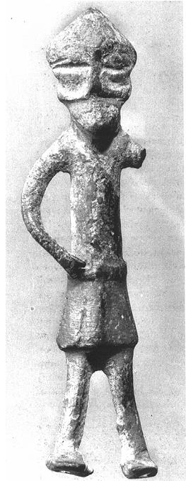
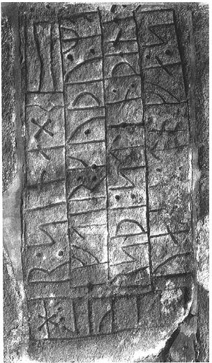
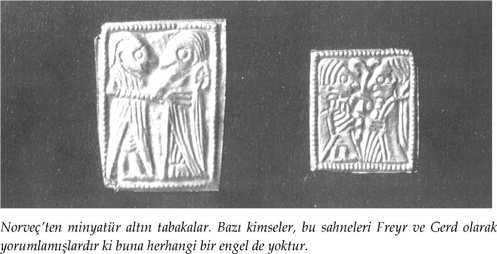

Oxford İngilizce Sözlüğü, miti "genellikle doğaüstü kişileri, eylemleri ya da olayları anlatan ve doğal ya da tarihsel olgular hakkındaki yaygın bazı kanıları somutlaştıran, tamamen kurmaca bir öykü" diye tanımlar ve bu sözcüğün, kimileyin, "kurmaca öğelere sahip herhangi bir öyküyü kapsayacak şekilde" gevşek biçimde kullanılabildiğini eklemeyi de ihmal etmez. Ben bu kitapta 'mit' sözcüğünü, yukarıdaki tanımlardan ne ilki kadar sıkı ne de ikincisi kadar gevşek anlamda kullanacağım. Kuşkusuz, bu kitapta yer alan öykülerin çoğu, doğaüstü varlıklar ve olaylarla ilgilidir ve bu yüzden, Ortaçağ yazarlarının bize aktardıkları haliyle pagan İskandinav düşünce tarzını anlamamıza yardımcı olabilirler. Fakat öykülerin hepsi tümüyle kurmaca değildir. Kitabın son bölümünde göreceğimiz bazıları, kahramanlardan oluşan bir toplumda savaşların, cinayetlerin ve beklenmedik ölüm olaylarının nasıl karşılandığını anlatmakta ve kaynağını fi tarihinde yaşanmış tarihsel olaylarda bulmaktadır. Yine de bu kitap, geneli itibarıyla, Viking İskandinavyasının tanrıları ve tanrıçaları hakkındaki mitleri kapsamaktadır. Bu mitlerin bir kısmının, doğal olgular hakkındaki kimi kanıları somutlaştırdıkları aşikârdır (ki ben bunun, onların yaratılma nedeni olduğu düşüncesindeyim). [S.9]Bu öykülerin özellikle mistisizmin çağdaş kültleriyle ilgilenen okuyuculara çekici geleceğine inanıyorum. Diğer öyküler de belki böylesi bir amaca hizmet ediyor olabilirler fakat daha muğlâktırlar ve ben ne bir antropolog ne de bir halkbilimci olduğum için, bu öykülerde somutlaştırılmaya çalışılan kanıların neler oldukları hakkında yalnızca birtakım tahminlerde bulunabilirim. Yine, bu kitapta yer alan diğer bir kısım mit ise, bugün bize sanki yalnızca eğlence olsun diye anlatılmış öyküler gibi görünmektedirler ve muhtemelen modern okuyucuların birçoğu da onları bu şekilde algılayacaktır.
Varlığını günümüze dek koruyabilmiş kayıtlara göre, İskandinavlar pek çok tanrıya ve tanrıçaya sahiptiler. Bunlar arasında, muhteşem okçu, kayak şampiyonu ve savaşçı tanrı Ull ile "özel anlaşmaların ve erkeklerle kadınların birbirlerine verdikleri sözlerin kaydını tutan... ve bu anlaşmaları bozanlardan ya da sözlerinden dönenlerden intikam alan" tanrıça Var gibi bazı simalar hakkında, bugün elimizde çok az bilgi bulunmaktadır. Tıpkı birlikte anıldıkları diğer tanrılar ve tanrıçalar gibi, bu simalar da bir zamanlar kendi mitlerine sahip olmuş olabilirler. Ancak, çağdaş okuyucu için artık genellikle bir addan fazlasını ifade etmemektedirler. Bu yüzden, her ne kadar bu kitapta genel olarak İskandinavya'nın büyük tanrıları hakkındaki mitler anla-tılıyorsa da, varlığını koruyabilmiş bu mitlerin aslında bir zamanlar mevcut olan numunenin küçük bir kısmı olabileceği ve kesinlikle tesadüfî olduğu da hatırdan çıkarılmamalıdır.
Bu tanrıların en ünlüleri, İskandinav panteonunu oluşturan iki temel tanrı topluluğundan biri olan Aesir soyudur. Bu topluluğun başı, diğer tanrıların ve herkesin babası, şiirsel ilhamın, gizem ve büyünün tanrısı, savaşçıların kumandanı ve koruyucusu olan Odin'dir. Doğmuş ve doğacak her insanın yazgısını bilen ana tanrıça Frigg ise Odin'in karısıdır. Diğer tanrılar ve tanrıçalar, Odin'in çocukları olarak bilinirler. [S.10]Bunlardan ilki ve en önemlisi, Aesir'i ezeli düşmanları olan devlere karşı koruyan, savaşçı tanrı Thor'dur. Altından saçları olduğu haricinde hakkında pek bir şey bilinmeyen tanrıça Sif ile evlidir.
 
Tek gözlü bu figürün, Odin olduğu düşünülmektedir. Çünkü İskandinav mitolojisindeki en önemli tek gözlü figür Odin'dir. Bilgiye sahip olmak karşılığında bir gözünü verdiği anlatılmaktadır.
Danimarka, Hanning'den bir runik anma taşı. Yazıların sonunda bazı kimselerin Thor'a ait olduğunu düşündüğü bir çekiç simgesi bulunmaktadır, oysaki daha sonraki bir döneme, 12. yüzyıla tarihlenmesi, onun bir zanaatçının işareti olabileceğini gösterir.1[S.11]
Odin'in diğer oğulları Bragi ve Baldr'dır. Hitabet ve şiir sanatı tanrısı olan Bragi, ebedi gençlik elmalarını elinde bulunduran ve önemli bir tanrıça olan Idunn ile evlidir. Tanrıça Nanna ile evli olan erkek güzeli tanrı Baldr ise talihsizliğiyle ünlüdür ve kör tanrı Hod tarafından kazara öldürülmüştür. Kurt Fenrir'in zincire vurulmasına yardım ederken sağ elini kaybeden gözüpek ve bilge savaş tanrısı Tyr da Odin'in oğullarından biri olarak görülür. Bu dünyanın ve tanrıların sonunu getirecek nihai savaşın habercisi olan Heimdall ise daha gizemli bir simadır ve oldukça kafa karıştırıcı bir başka şahsiyet olan Loki'nin ezeli düşmanıdır. Loki, bir dev olan Farbauti'nin oğludur ve yarı tanrı yarı iblistir. Kendisine büyük bir sadakatle bağlı olan Sigyn ile evli olmakla birlikte, dişi dev Angrboda ile yaşadığı bir kaçamağın meyveleri olan ve kötü niyetli/uğursuz oldukları bilinen üç çocuğu vardır: kurt Fenrir, Dünya Yılanı Iormungard ve yeraltı diyarının yöneticisi olan doğaüstü yaratık Hel.
Aesir tanrılarının yanında, bereket ve zenginlik tanrıları olarak bilinen Vanir tanrıları vardır. Bunlar Niord, Freyr ve Freyia'dır. Niord denizcilik, balıkçılık ve bolluk tanrısıdır. Dişi bir dev olan Skadi ile evlenmiş, ama anlaşamadıkları için bu evliliği kısa sürmüştür. Niord'un çocukları, ikiz kardeş oldukları halde birbirleriyle ilişkiye de girmiş olan Freyr ve Freyia'dır. Freyr, dişi dev Gerd ile evlenmiştir. Freyia ise Od adlı birisiyle evlenmiştir. Freyr ve Freyia, bereket ve doğurganlık tanrılarıdır.
Tanrılar sınıfının altında yer alan cüceler, elfler, nornlar, cadılar ve valkyrieler gibi diğer doğaüstü yaratıkların yanı sıra, Hoenir, Kvasir, Gefion, Vali, Vili, Ve, Vidar ve bunlara benzer ikincil konuma sahip bazı tanrılar da vardır. Gelgelelim, tanrıların en büyük düşmanları, iotnar'dır. Tekili iotunn olan bu sözcük genellikle 'devler' olarak çevrilmekle birlikte, bu kadim, çirkin, korkunç ve kötü niyetli yaratıkları 'demonlar' ya da 'troller' olarak adlandırmak da pekâlâ mümkündür. [S.12]
Bu kitaptaki çevirilerde, özgün metinlere kelimesi kelimesine sadık kalmaktansa, akıcı bir dil kullanmayı yeğledim. Bu durum, özellikle kitapta yer alan şiir çevirilerinde, bir yandan onları daha anlaşılır hale getirmeye uğraşırken diğer yandan da dizelerin kaynak metinlerdeki özgün sıralarını kabaca korumaya çalıştığım yerlerde söz konusu oldu. Eski İskandinav dillerinde geçen adların (ve sözcüklerin) çağdaş İngilizceye çevrilmeleri sırasında birtakım keyfilikler olması kaçınılmazdır, bunu kabul ediyorum. Bu yüzden, kitap boyunca, 'standart' Eski İskandinav/İzlanda dillerindeki sözcükleri italik halde vereceğim. Bu sözcüklerde kimileyin sıra dışı birtakım harfler kullanılmaktadır. Bunların en önemli olanları, İskandinavların farklı sesleri temsil etmek için kullandıkları ve çağdaş İngilizcede th harfleri ile karşılanan Þ ve ð harfleridir. Diğer durumlarda, eğer bir ad bu metinlerde Roma dillerindeki haliyle geçiyorsa, o adın çekimsiz ve şivesiz olan yalın hali kullanılacak ve gerekli görüldüğü durumlarda ð gibi nadir kullanılan harflerin yerine 'd' harfi gibi yaygın kullanılan harfler getirilecektir; sözgelimi, Óðinn sözcüğü yerine 'Odin' sözcüğü kullanılacaktır. Bu durum, Odin ya da Frodi (Fróði) gibi sözcükler yerine bunların Latince-ye geçmiş halleri olan Othinus ya da Frothi gibi sözcükleri alıntıladığımda, kaçınılmaz olarak, ufak tefek sorunlar yaratacaktır. Diğer bazı durumlarda ise adları ya da lakapları tamamen İngilizceleştirme yoluna gittim, zira Eric Bloodaxe yerine Eirik Blodox (Eiríkr blóðøx) demek, bana biraz saçma geliyor. [S.13]
[S.14]